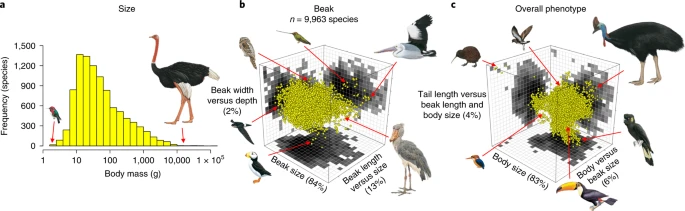
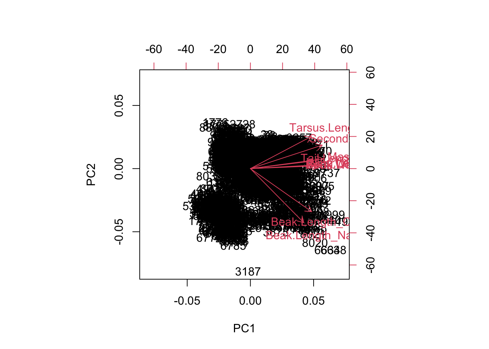
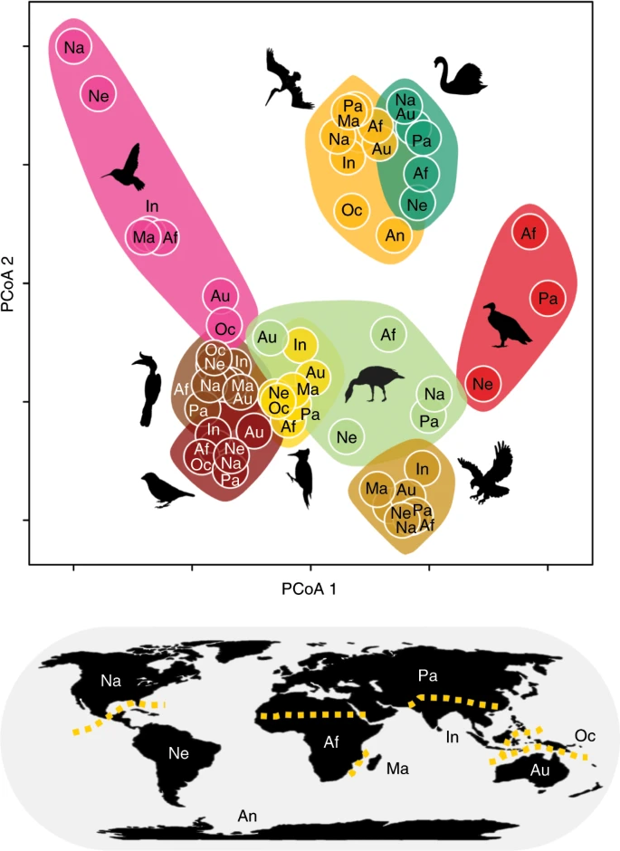
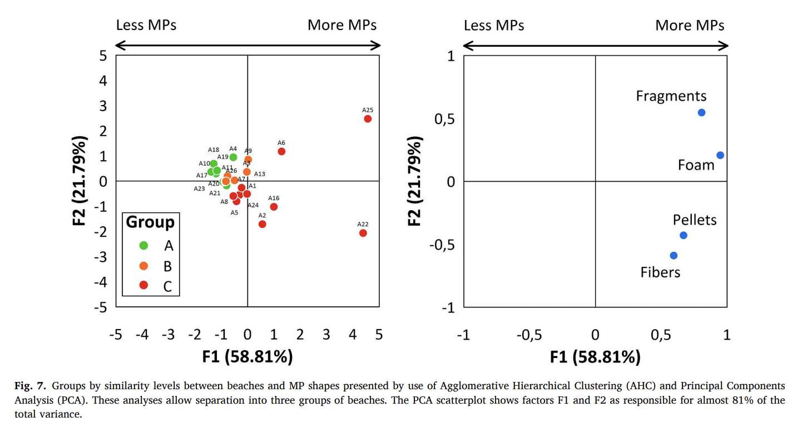

Be able to picture data as a multidimensional cloud
Gain familiarity with the terms, “trait space”, “morphospace”, “pairs plot”, “PC axes”, “cumulative variation explained”, “biplot”, and “scree plot”
Verbally describe the process behind a PCA
Interpret the output from a PCA
Identify when the output from a PCA is robust… or not
14.1.2 Lesson outline
Introduce Pigot et al. 2020 data on bird morphology and motivate class with a scientific question
Explore trait data in 2D and 3D while projecting example species into trait space
Introduce PCA
Run PCA
Interpret PCA
Challenge questions
14.2 Background
Most things in the natural world are inter-related and correlated, where many trends and observations tend to change in a predictable way together.
We use multivariate techniques to reduce complex situations into more manageable ones and to deal with the fact that patterns are correlated with other patterns, which are in turn driven by a number of interacting ecological processes.
Multivariate statistics are a family of statistical tools used to to handle situations where the predictor and/or the response variables come in sets, allowing us to distill through some of that correlated (and sometimes redundant) information and to analyze these variables simultaneously. These tools are also useful for identifying substructure or groupings of data.
Common biological questions that multivariate statistics can be used to answer:
Do sites with similar disturbance regimes (history of fire, nutrient fertilization, soil chemicals) host similar biological communities? (could use a PCA, NMDS, PCoA)
What is the effect of a set of environmental variables (temperature, salinity, current strength) on the composition of fish communities? (could use a RDA)
Do communities in different habitats contain a different set of functional traits? (could use a PCA, NMDS, PCoA)
14.3 Bird morphology data
Today we will be introducing the world of multivariate statistics by working with a published data set from Pigot et al, “Macroevolutionary convergence connects morphological form to ecological function in birds“, Nature Ecology & Evolution, 2020 (here). In this paper, the authors ask if morphology is linked to ecological function in birds. We might expect this to be true if species have evolved traits (in this case morphological traits) to optimize their fitness in a specific abiotic environment. In this way, traits can be used to link species to theories of community assembly, niche partitioning, and local adaptation. A nice general interest summary of the paper is provided here.

We might expect that birds that have evolved to occupy specialized niches–say the pollinators or the deep sea divers–might have also evolved specialized morphologies in order to exploit these niches. If this is true, we might also see that species that occupy similar niches might have evolved similar traits despite being phylogenetically unrelated. This would give rise to convergent evolution.
Today, we will be simplifying the Pigot et al. (2020) analysis and to ask two questions among birds of the neotropics:
Do birds that are more closely related (eg. within order) tend to have similar trait values and occupy the same regions of morphospace (this would be an indication of phylogenetic inertia)?
Do birds that occupy similar trophic niches have similar traits, as we might expect from trait-based theories of ecology and convergent evolution? While we will not be performing phylogenetic analyses and will not explicitly be testing for the signal of convergent evolution, Pigot et al. (2020) do tackle this in the published paper.
We will be using the morphology data from Pigot et al. (2020), who measured 9 traits (8 morphology + mass) on museum specimens. These traits are previously known to be important determinants of bird ecomorphology.
The values that these species take for each trait form the data that we will use in our multivariate analysis. To answer the our questions of interest, we want to know if species group together with similar traits based on order or trophic niche. To do this, we will perform a principle component analysis (PCA), a common multivariate technique to summarize multiple dimensions of correlated data into with fewer dimensions.
But first, let’s read in and take a look at the data.
# read in bird databirds <-read.csv("data/bird_traits.csv") # if you've already downloaded it# birds <- read.csv("https://eeb313.github.io/lectures/data/bird_traits.csv") # read directly from class website# subset to neotropics so we have a more tractable dataset for classbirds <-subset(birds, Realm=="Neotropic")
# need to log transform bc morphological data are often not normally distributedpar(mfrow=c(1,2))hist(birds$Beak.Length_Culmen, main="Beak.length")hist(birds$Mass, main="Mass")
par(mfrow=c(1,1))# log transform and overwrite original columnsbirds[, 15:23] <-log(birds[ , 15:23])nrow(birds) # each row is a species
[1] 3566
14.4 Exploring trait space
We want to identify if different groupings (eg orders, trophic niche) of species have more or less similar traits.
How might we go about doing this?
Ideally, we would construct a 9 dimensional morphospace, where each dimension corresponds to one of our traits… but humans can’t visualize above 3 dimensions. So lets start by visualizing the relationships between our 9 traits, ie dimensions, in two dimensions using pairwise plots.
14.4.1 Two-dimensional (2D) trait space
We can look at the pairwise relationships between traits in bivariate plots to understand how different traits are correlated with each other. Remember from previous lectures that high multicolinearity can introduce problems in univariate statistics, we can see that here.
# all highly correlated# each point here is a speciespar(mfrow=c(1,2))plot(birds$Beak.Depth, birds$Beak.Width)plot(birds$Wing.Length, birds$Mass)
par(mfrow=c(1,1))# can look at all variables together# can see that all morphological traits are highly linearly and positively correlated# ie species with large masses ALSO have high wing length and high tarsus length (lower leg bone, the bone below what looks like a backwards facing knee)pairs(birds[, 15:23])
# lets look at where some example species fall out on here# Anthracothorax_mango = hummingbird from Jamaica# Harpia_harpyja = Harpy eagle # Junco_vulcani = Volcano Junko from costa rica and panamacols <-ifelse(birds$Binomial=="Anthracothorax_mango", "darkorange" , ifelse(birds$Binomial=="Harpia_harpyja", "darkblue", ifelse(birds$Binomial=="Junco_vulcani", "#009900", alpha("grey80", .01))))pairs(birds[, 15:23], col=cols, pch=19)
What can we conclude from this figure about the relative morphological similarity/dissimilarity of the species?
14.4.2 Three-dimensional (3D) trait space
Now let’s expand this visualization to three dimensions–we still can’t capture the full 9 dimensions of our data in such a way that we can visualize it, but seeing the 3D plot can help us get a flavour of how our species are spread through morphospace.
Generally 3D plots are frowned upon as a data visualizing tool–they are complicated to interpret and there are usually simpler and clearer ways to show relationships between your variables in a manuscript, presentation, or project. In this case, these 3D plots are a useful tool for illustrating the idea of higher dimensional data and the concepts of multivariate statistics.
# lets pick 3 dimensions or traits to visualize, beak.Width, Wing.Length and Mass# rotate plot to see how each variable are related to eachotherplot3d(birds$Mass, birds$Beak.Width, birds$Wing.Length, col=alpha("grey80", .01))
Which dimensions have the tighter relationship? How can you tell?
Along which dimension is there the most variation?
Lets now add our 3 exemplar species to see how they fall in this morphospace.
How would you describe where these 3 species fall out in morphospace? Where is the centre of morphospace?
How could we quantify this? Remember that we have 3 dimensions (traits) here, but really we’re interested in all 9. And it is not uncommon to have even more.
The solution is euclidean distances, which calculate the distance between points in multidimensional space. Note there are other methods and transformations if your data aren’t numeric and continuous.
14.5 Principle Components Analysis (PCA)
Rather than going through each set of traits and asking visually how they are correlated and where our species fall out across these highly correlated traits, we can run a PCA, which does all of this for us.
14.5.1 Understand PCA
A PCA (Principle components analysis) is one of the most common ordination techniques used in EEB. They are really popular in the community ecology literature, the functional morphology literature, and population genetics. They can be used as an exploratory tool, intermediate step in an analysis, or the final product of an analysis. There are also lots of variations that deal with phylogenetic structure or data that violates the assumptions (eg categorical data).
PCAs work by identifying a new coordinate system (PC axes) that best account for the variation in a cloud of data across multiple dimensions. This process produces a set of “summary axes” that explain the variation in the data. Ideally, this has the effect of reducing the dimensionality of the data. In our Pigot et al. example, this would mean that we could describe how our species are spread across trait space with less than 9 trait axes. This can be useful for summarizing information, understanding how traits are correlated with each other, provide simpler visualizations (ie in less dimensions), or can be a necessary first step for downstream analyses.
What this means is the a PCA is simply a rotation of your data–it doesn’t change the relative relationships between species or how they are distributed through trait space. It simply provides new axes through which to look at the relationships between the data (eg. species) and the dimensions (eg. traits).
Importantly, a PCA assumes a linear relationship between your variables, can only take quantitative data, and requires more rows than columns in the data.
The procedure to conduct a PCA is as follows:
Imagine your data contains n objects and p variables. The n objects can be represented as a cluster of points in the p-dimensional space.
Imagine a 9-dimensional object with each of our trait measurements as an axis (k=9). We’ve already visualized this in 3 dimensions.
Plot our species (n=3566) in this 9D space such that we are representing our data as cloud in high dimension space. Identify the centre of trait space using euclidean distances.
The cluster of data in trait space is generally not spheroid: it is elongated in some directions and flattened in others (recall our bird data in 3 dimensions). This step fits a line through the data points in multidimensional space that goes through the centre of trait space and that explains the most variation in our data. This is the first PC axis.
Recall, in our 3D toy example, the major axis of variation is between mass and wing length. To actually calculate the math to add this line to the 3D figure, we would have to do the math behind a PCA or simply run the PCA and plot the resultant line… let’s do that now in order to visualize the process.
mean_xyz <-apply(birds[, c(23, 17, 20)], 2, mean)xyz_pca <-prcomp(birds[,c(23, 17, 20)], scale.=F)dirVector1 <- xyz_pca$rotation[, 1] # PC1plot3d(birds$Mass, birds$Beak.Width, birds$Wing.Length, col=alpha("black", .1), size=1)#abclines3d(mean_xyz, a = t(dirVector1), col="darkorange", lwd=2) # mean + t * direction_vector of PC1lines3d(c(1,9), c(.5,3.5), c(3.5, 6.5),col="darkorange", lwd=8)
Find a second line through the data under the condition that it also goes through the centre of trait space and is orthogonal to the first axes (i.e., at a 90° angle). This means that these two axes are uncorrelated. This will be our second PC axis.
Because we are visualizing this output in a knitted document, we can’t add the lines for the other dimensions and have the 3D figure render properly. Instead, I’ve evald the code for how to plot it on your own computer.
options(rgl.useNULL =FALSE)dirVector2 <- xyz_pca$rotation[, 2] # PC2dirVector3 <- xyz_pca$rotation[, 3] # PC3rgl::open3d()plot3d(birds$Mass, birds$Beak.Width, birds$Wing.Length, col=alpha("black", .1), size=1)abclines3d(mean_xyz, a =t(dirVector1), col="darkorange", lwd=2) # mean + t * direction_vector of PC1abclines3d(mean_xyz, a =t(dirVector2), col="darkblue", lwd=2) # mean + t * direction_vector of PC2abclines3d(mean_xyz, a =t(dirVector3), col="darkgreen", lwd=2) # mean + t * direction_vector of PC3
This figure would show that the PCA has identified the major axis of variation in our 3D data as between mass and wing length as we visually identified earlier. This forms PC1 (orange line). The second axis of variation here is formed by PC2 (blue line). The third axis (PC3), is formed by the green line. Note how all lines are perpendicular (orthogonal) to each other. [note, you will have to run this figure on your own computer, the added lines do not knit]
This process continues until we have as many PC axes as we did starting dimensions. So in the case of our bird trait data, that would be 9.
14.5.2 Run PCA
Now that we’ve conceptually visualized the process of what a PCA is doing, let’s run it in R.
We will use the function prcomp–there are many functions that calculate a PCA in R that all vary slightly, but generally give consistent results.
At its most basic, prcomp takes two variables, the trait data and scale = TRUE/FALSE. The scale command specifies whether the PCA will run on a correlation or a covariance matrix. Choosing scale = TRUE selects a correlation matrix which standardizes your data to have unit variance. This puts all your variables on the same scale and is necessary if your data contain multiple types of units (eg mass measured in grams and wing length measured in cm).
# just the trait data, scale = TRUE puts all trait values on unit variance, use when measure in multiple units, makes traits directly comparablepca.out <-prcomp(birds[, 15:23], scale.=T)
This gives us a summary in table format of variance explained by each axes. This tells us how good a job each PC axis is doing at explaining the variation across our data. Note the second row (Proportion of Variance) that tells us how well each individual PC axis is doing while the third row (Cumulative Proportion) simply adds the individual contributions of variance explained by each axis to tell us cumulatively how much variation we are explaining with the addition of each new PC axis. What we want to see here is that the first several axes are explaining the majority of the variation in the data. If the first PC axis is only explaining 5% of the variation in the data, that means that the PCA is not describing the relationships between your data very well and any interpretations of the output won’t be meaningful.
How much variation is explained cumulatively by the first 3 PC axes in our data?
We see that this object is structured as a five-item list. We mostly care about two of these items:
Loadings – appropriately named rotations – these identify the PC axes (ie rotations) around which the data are organized.
Species scores – lazily named x – these are the coordinates in PC space for each of the species in our data and tell us where in PC space each species falls.
head(pca.out$x) # this gives us the particular location (ie the coordinates) of each of our species in the multidimensional space formed by the PC axes
head(pca.out$rotation) # this tells us which of our traits are contributing most strongly to each PC axis (ie which variables are being summarized by each newly created PC axis)
The way we interpret this is by looking, within each PC axis, for the variables that have the largest absolute values. These are the variables that are describing the most variation along this axis.
For example, all the traits along PC1 are positively correlated with each other (all values have the same sign). PC1 is a axis where at large values of PC1 species have long wings, big masses, long tails etc. PC2 is slightly more interesting to interpret: it is a beak length axis vs tarsus length. This suggests that species that have long beaks tend to also have a short tarsus (leg bone).
Which traits drive variation along PC3?
We can visualize these relationships using the base R function biplot.
par(mar=c(5,5,5,5))biplot(pca.out)

On this figure, there are 2 sets of information. Each species is plotted (these are the numbers). As well, the variable loadings are represented as arrows and tell us how each variable is contributing to each axis. The clustering of species along the axes (and rotations) tell us which species are similar in terms of their traits.
We can visualize this with the function autoplot in the ggfortify package, which takes advantage of ggplot style plotting.
autoplot(pca.out)
Warning: `aes_string()` was deprecated in ggplot2 3.0.0.
ℹ Please use tidy evaluation idioms with `aes()`.
ℹ See also `vignette("ggplot2-in-packages")` for more information.
ℹ The deprecated feature was likely used in the ggfortify package.
Please report the issue at <https://github.com/sinhrks/ggfortify/issues>.
The simplest version of autoplot displays less information than our biplot function. On this figure we can see that we are plotting PC1 by PC2 and each point on the figure is each of the rows aka species in our data. autoplot handily also shows us the proportion of variance explained by each of these PC axes. Now lets add the loadings.
# lets add our 3 example species to see where they land in PC spacecols <-ifelse(birds$Binomial=="Anthracothorax_mango", "darkorange" , ifelse(birds$Binomial=="Harpia_harpyja", "darkblue", ifelse(birds$Binomial=="Junco_vulcani", "#009900", alpha("grey30", .1))))autoplot(pca.out, x=1,y=2,loadings=TRUE, loadings.label=TRUE, loadings.colour="grey30", colour=cols, size=3) +theme_bw()
Based on where these species fall out in PC space, what can we conclude about the trait values of the hummingbird vs the junko vs the eagle?
The next step in the PCA workflow is to identify the important PC axes that give meaningful information about the data.
We do this with a scree plot. This shows us the amount of variation explained by each axis. As we know, each axis explains subsequently less variation. We use scree plots to help us determine at which point the axes stop adding much new information. We can do this visually or quantitatively. We will just go over the visual method as determining which axes to keep is pretty subjective and depends on your system and question of interest.
plot(pca.out)
Each bar is a PC axis, starting from PC 1. In a scree plot, what you want to look for is a big jump between subsequent axes. It’s subjective, but based on this scree plot I would probably be inclined to keep the first 2 PC axes. As well, we can look at the cumulative proportion of explained variance:
summary(pca.out)$importance[,1:6]
We can see that by PC2 we have explained 86% of the variation in the data, which is pretty good. By the time we get to PC4, each individual axis is explaining less than 10% of variation in the data, so adding them, and conversely excluding them, isn’t going to have a large effect.
14.5.4 Applications of PCA to biological questions
Recall the way we started this lecture, we want to be able to answer if:
Do birds that are more closely related (eg. within order) tend to have similar trait values ie occupy the same regions of morphospace (indication of phylogenetic inertia)?
Do birds that occupy similar trophic niches have similar traits, as we might expect from trait-based theories of ecology and convergent evolution?
To answer these questions let’s return to our autoplot and add some convex hulls that define different groupings of our data. First, we will group the species by their higher level taxonomic structure (order) and then by ecology (trophic niche).
# answers first questionautoplot(pca.out, x=1,y=2,data=birds, colour="Order",frame=TRUE) +theme_classic()
# answers second questionautoplot(pca.out, x=1,y=2,data=birds, colour="TrophicNiche",frame=TRUE) +theme_classic()
What can we conclude from these figures?
14.5.5 Strengths and limitations of PCA
In class we’ve discussed some of the assumptions behind a PCA and how we interpret a PCA. Is there any type of data for which a PCA might not be appropriate? What are some examples of a biological research question for which a PCA might NOT be appropriate, even if the data is conceivably multidimensional? What are some of the drawbacks of using a PCA? When might you want to consider using a PCA vs not?
14.6 Applications of PCA in the biological literature
PCAs are really common across lots of disciplines and they are very common to encounter when reading papers. Let’s look at some real examples of published PCAs and interpret them. Are they robust? Do you trust the authors conclusions?
14.6.1 Example from Pigot et al, “Macroevolutionary convergence connects morphological form to ecological function in birds”, Nature Ecology & Evolution, 2020
What can we conclude from this Figure 6?

Figure 6: Clustered points along each principal coordinate axis (PCoA) show the relative morphological similarity between trophic niches from different ecological theatres (biogeographical realms) based on the average pairwise distance between species (n = 9,963 species) in nine-dimensional morphospace (see Methods). Individual trophic niches are omitted where they are absent or rare (<6 species) within particular biogeographic realms (Na, Nearctic; Ne, Neotropic; Pa, Palaearctic; Af, Afrotropic; Ma, Madagascar; In, Indo-Malaya; Oc, Oceania; Au, Australasia; An, Antarctic). Bird images reproduced with permission from HBW, Lynx Edicions
14.6.2 Microplastics example
In this paper, the authors seek to identify if beaches along the Caribbean coast of Colombia vary in the quantity and type (fibers, pellets, fragments, or foam) of microplastic (MPs) pollution.
Group A - beaches in tolerable conditions with a “Moderate” MPs presence
Group B - beaches in bad conditions with a “High” MPs presence
Group C - beaches in extremely bad conditions due to “high” and “very high” MPs densities
Focusing on the bottom left panel of Figure 7, what do you think of the authors grouping the data into these 3 categories?

14.6.3 Population genetics example
The authors in this paper, “Getting genetic ancestry right for science and society”, argue that in a human genetic context, PCAs can do more harm than good when artificial categories are applied to continuous data with no discrete breaks. For example, they show a PCA plot of human genetic ancestry–defined by migration and high mixing–and attempt to impost discrete clusters of continental origin on the PC space.
Based on this figure, do you think that imposing these categories on this data is reasonable? Why or why not? What does this suggest about what types of data it might be inappropriate seek classifications of via a PCA?